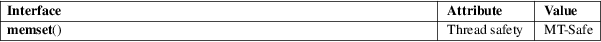

memset − fill memory with a constant byte
Standard C library (libc, −lc)
#include <string.h>
void *memset(void s[.n], int c, size_t n);
The memset() function fills the first n bytes of the memory area pointed to by s with the constant byte c.
The memset() function returns a pointer to the memory area s.
For an explanation of the terms used in this section, see attributes(7).

C11, POSIX.1-2008.
POSIX.1-2001, C89, SVr4, 4.3BSD.
bstring(3), bzero(3), swab(3), wmemset(3)